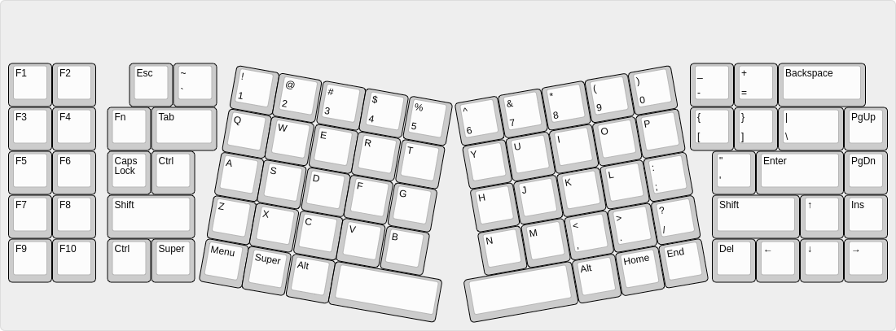
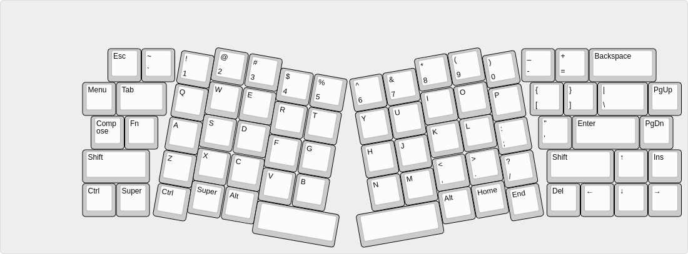
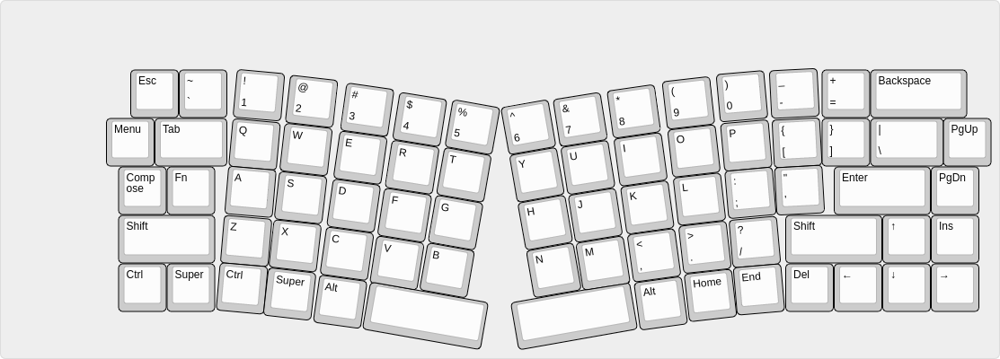
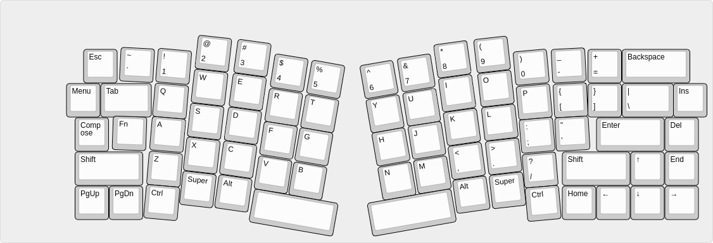

Goodbye Flounder, Hello Turbot¶
Published on 2020-09-23 in Turbot Keyboard.
I’m still on my keyboard roll, with two more keyboard-related projects. This one is going to be a scavenging on a very successful educationally, but not so much in terms of the end product, project — Flounder Keyboard . That keyboard is indeed really flat, as intended, but due to me messing around with key spacing and due to poor switches — not very usable. It would be a shame to have all those switches just lying there and gathering dust, though, so I decided to rebuild it into a keyboard with a slightly more interesting layout (and proper key spacing this time).
I have recently built a bunch of tiny ortholinear keyboards, and discovered that touch-typing is actually much easier if the columns are not all jumbled and skewed. In fact, I’m using one of those keyboards, Dorsch 48k Keyboard , as my main keyboard every day now. It’s great, because there is simply not enough room to move your hands away from the home row, so you are touch-typing whether you like it or not. However, there are some small inconveniences still, namely having to keep your hands relatively close together, and one-handed operation being a bit more involved, especially when playing computer games and needing access to the number row.
The first problem has a standard solution: split keyboard. However, from my experiments with 5plit Keyboard Clone I know that when the keyboard consists of two pieces, each of them tend to wander around my desk randomly, ending up in weird positions. It also gets trickier to locate the keyboard after taking my hand from the mouse. So I really wanted a single-piece device this time. But no problem, instead of splitting the keys into two separate keyboards, we can put them all on one keyboard, but in two groups that are tilted and moved apart a little. We get our standard ergonomic keyboard that way. So that’s what I want to build. But which layout?
I immediately noticed that I haven’t heard about a low-profile Atreus keyboard, even though there is a perfect name for such a contraption: Flatreus. So I started with an Atreus layout, but then having all those extra switches and caps from Flounder, I thought that it would be a waste not to use them all too. So I designed a layout that is basically a regular keyboard, with the middle replace with an Atreus- like arrangement:
I liked the general feel of this, and also the symmetry this design has, but one thing that immediately jumps out at you are the gaps between the slanted and the straight portions. So I tried to smush them together a bit better:
Then I though: why not make the transition a little bit more smooth, like the Alice or Saggitarious layouts, only ortholinear? You know, a bit like those X-Bow keyboards that Hackaday.com wrote about a while ago. Something like this:
I really liked this design, a decided that this is going to be keyboard I’m going to make. But looks is one thing, and actual usability another, so I went back and added the curve known from Atreus that takes into account the fact that our fingers tend to be different lengths. I ended up with the final layout:
This is what I’m going to make.